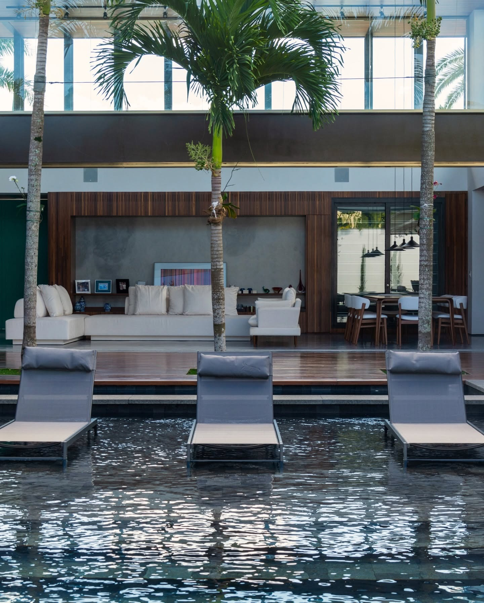
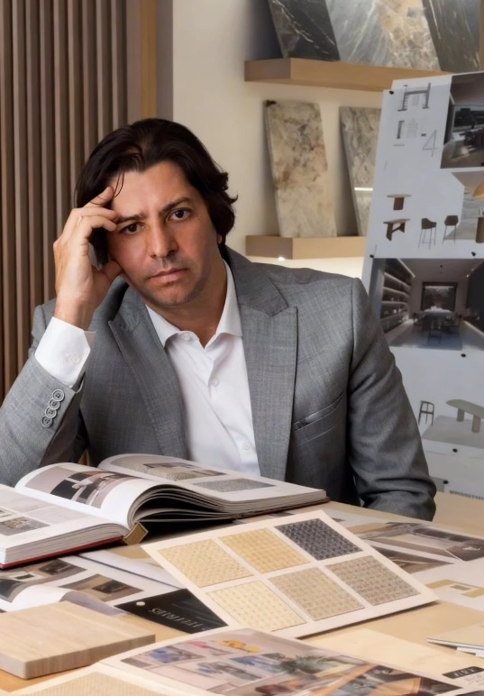
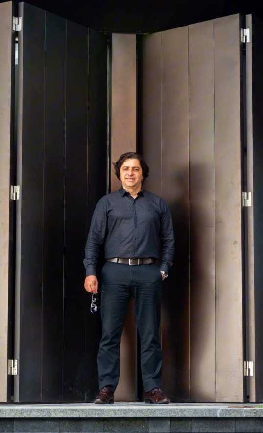

Studio Cristiano Assis
O essencial
permanece.
Arquitetura entre paisagem, matéria e tempo.
Casa Aria Arquitetura residencial
Nossa visão
Uma casa
começa muito
antes do
desenho.
Começa no lugar, na luz e na rotina. Pensamos arquitetura, interiores e paisagem como uma mesma linguagem — para criar espaços que acolhem a vida e fazem sentido com o passar do tempo.
Menos excesso. Mais arquitetura.
Projeto 01
Casa Aria
Madeira, vidro, água e sombra.
Uma arquitetura que se abre para a paisagem.
Residências autorais
Projeto 02 · Casa Nexo
Habitar
a calma.
Planos que se encontram. Texturas que guardam presença. Uma casa pensada a partir da relação entre arquitetura e paisagem.
A sofisticação está na experiência. No que se sente ao chegar, permanecer e viver.
Casa Nexo · Visualização arquitetônica
Casa NexoPedra, madeira e natureza.
Da concepção à realização
Uma intenção.
Em cada decisão.
A arquitetura ganha consistência quando todas as partes conversam. O trabalho de conduzir o projeto preserva sua essência até a realização.
01Escutar e conceber
Compreender o lugar, os desejos e o modo de viver. Desenhar uma arquitetura que nasce dessa escuta, com proporção, clareza e identidade.
Lugar · Programa · Arquitetura
02Integrar e desenvolver
Articular arquitetura, interiores, desenho de luz e paisagismo. Coordenar os projetos complementares para que forma, técnica e experiência pertençam ao mesmo conjunto.
Interiores · Light design · Paisagismo · Complementares
03Conduzir e realizar
Acompanhar as escolhas que transformam desenho em matéria. Conduzir execução e realização com atenção aos detalhes, mantendo a intenção presente na obra.
Execução · Acompanhamento · Realização
O olhar por trás da arquitetura

Studio Cristiano Assis
Cristiano
Assis.
A arquitetura começa com um olhar atento. Para o lugar, para os materiais e, sobretudo, para as pessoas.
À frente do studio, Cristiano reúne sensibilidade e rigor na condução de cada projeto. A escuta orienta o desenho; o cuidado com a realização preserva a autoria.
“A casa precisa fazer sentido
para a forma como se vive.”

Uma nova conversa
O próximo espaço começa aqui.